The plotting library everything else is built on top of.
4 notebooks · 1 note
The problem behind this topic
Arjun printed a table of 200 monthly sales figures and stared at it.
He could see the numbers but not the shape — was it growing, seasonal, flat with one bad month? The table would not say.
Numbers are for computing. Pictures are for noticing.
One line plot answered it in a second: a steady rise with a dip every December. Matplotlib is the base layer — a little verbose, but it is what Seaborn and Pandas plotting are quietly calling underneath.
🔑 The one idea
A figure holds axes; you draw onto axes. Once that is clear, every chart type is the same pattern.
Curriculum module: M02 - Data Visualization with Python Status: 🟡 Learning
Matplotlib is Python's base plotting library. It turns arrays and lists into
figures — lines, scatters, bars, histograms, pies — and writes them to a
notebook or to an image file. Seaborn and Pandas' own .plot() are built on
top of it.
Chart-type fundamentals: line, scatter, bar, histogram, pie, fill, annotations, subplots, and saving to file. All explanation lives in this notebook, in the Markdown cells above each group of code cells.
Output written by the notebook's last cell via plt.savefig
Covered so far
Line plots and format strings, marker and line-style keywords, titles and axis
labels, grid, subplots, scatter with colormaps and bubble sizes, bar and barh,
histograms, pie charts with labels and explode, annotations with arrows,
fill_between, and savefig.
Not covered yet: legends, autopct on pie charts, the object-oriented
fig, ax = plt.subplots() style, and plotting directly from a Pandas
DataFrame. The instructor module also includes Seaborn and Plotly — add those
folders when those lessons begin.
📘 Instructor Curriculum — M02, Data Visualization with Python
What this notebook is: a hands-on tour of matplotlib.pyplot, covering six chart families (line, scatter, bar, histogram, pie, fill) plus the styling arguments that apply across all of them.
How to read it: this notebook is a ladder. Almost every cell repeats the cell above it and changes exactly one thing. So the useful question at each step is what is different from the cell before? Each Markdown section below explains every code cell that follows it, up to the next section.
Matplotlib version used here: 3.10.9.
The mental model — read this first
Every cell below is plt.something(...), and that hides an object tree:
Figure ......... the whole canvas / the page
|
+-- Axes ..... ONE plot area (not "axis" - an Axes HOLDS two Axis objects)
|
+-- Artists ... the things actually drawn: lines, dots, bars, wedges
+-- Axis ...... ticks, limits, tick labels
Which call touches what:
Call
Acts on
plt.plot, plt.scatter, plt.bar, plt.pie
the current Axes — draws into it
plt.title, plt.xlabel, plt.ylabel, plt.grid
the current Axes — decorates it
plt.suptitle, plt.savefig, plt.show
the current Figure
Note
💡 Engineering Extension — Recommended Extension - Not part of instructor curriculum.
pyplot keeps a hidden "current figure / current Axes" pointer, exactly like Spring's RequestContextHolder keeps the request in a thread-local so you can reach it without passing it around. plt.title(...) never says which chart it titles — it targets whatever is current. That is why cell order matters in this notebook, and why the explicit style (fig, ax = plt.subplots() then ax.set_title(...)) is what production code should use: constructor injection instead of a global lookup.
The flow in every single cell of this notebook is the same:
data (np.array or list)
-> a plotting call plt.plot / scatter / bar / hist / pie
-> styling calls plt.title / xlabel / ylabel / grid
-> plt.savefig(...) (before show, if saving)
-> plt.show() renders AND clears the figure
1. Setup — the import cells
Cell
Why it exists
import matplotlib
Imports the top-level package only. Gives version info and config (matplotlib.rcParams) but not the plotting functions — which is why a second import follows.
print(matplotlib.__version__)
Prints 3.10.9. Checking the version first is a good habit: matplotlib keyword arguments have changed across major versions, so a snippet from the internet that fails may simply be written for a different one.
import matplotlib.pyplot as plt
pyplot is the submodule that holds plot, scatter, bar, show, … The alias plt is universal convention.
import numpy as np
Most data below is built with np.array. Matplotlib accepts plain Python lists too — the annotation cells near the end prove it.
Takeaway:matplotlib is the library, matplotlib.pyplot is the drawing API. Importing the first does not give you the second.
codecell 2
import matplotlib
codecell 3
print(matplotlib.__version__)
Output
3.10.9
codecell 4
import matplotlib.pyplot as plt
import numpy as np
2. Line plots and the format-string shortcut
The next 12 cells all reuse the same two arrays:
x = np.array([1,2,3,4,5,6,7,8,9,10])
y = np.array([2,4,6,8,10,12,14,16,18,20])
y is exactly 2 * x, so the true shape is a straight line through the origin with slope 2. That is deliberate: when the data is boring and predictable, any change you see on screen is caused by the style argument, not by the data. Clean experiment design.
The baseline — plt.plot(x, y)
Line
What it does
plt.plot(x, y)
Pairs the arrays element-wise into points (1,2), (2,4) … (10,20) and connects them with a solid line. Both arrays must be the same length, or you get ValueError: x and y must have same first dimension.
plt.show()
Renders the figure, then clears it so the next cell starts on a fresh canvas.
Defaults you get silently: line style - solid, line width 1.5, no markers, and the first color of the property cycle (#1f77b4, a medium blue).
On plt.show() in Jupyter: the chart would display without it, but the call also suppresses the [<matplotlib.lines.Line2D ...>] repr text that would otherwise print above the image. Keeping it is correct, and it makes the code portable to a .py script where it is mandatory.
The format string
The third positional argument is a compact shorthand for [marker][linestyle][color].
Code
Result
Rule it teaches
'o'
circle markers, no line
marker only ⇒ the connecting line disappears
's'
square markers, no line
same rule
'd'
thin diamond, no line
'D' uppercase is the fat diamond
'p'
pentagon, no line
same rule
'r'
red solid line
color only ⇒ the default line is kept
'g'
green solid line
same rule
Those two blocks are the lesson, learned by contrast: adding a marker removes the line; adding a color does not.
Single-letter colors: b blue, g green, r red, c cyan, m magenta, y yellow, k black, w white.
The same thing as a keyword
plt.plot(x, y, marker="*") is identical in effect to passing '*'. Format strings are terse; keywords are readable and self-documenting. Both appear here so you can read other people's code.
All three parts at once
Code
Marker
Line style
Color
'o-r'
circle
- solid
red
'o:g'
circle
: dotted
green
'o--y'
circle
-- dashed
yellow
'o-.m'
circle
-. dash-dot
magenta
Matplotlib parses the three parts in any order — 'o-r', '-or' and 'ro-' are the same chart. The one real trap: '-.' (dash-dot) and '-' followed by a . marker look alike in text. Read them carefully.
codecell 6
x = np.array([1,2,3,4,5,6,7,8,9,10])
y = np.array([2,4,6,8,10,12,14,16,18,20])
plt.plot(x,y)
plt.show()
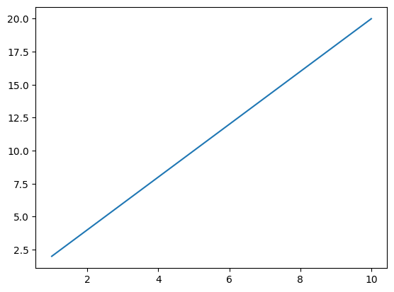
Output from this notebook.
codecell 7
x = np.array([1,2,3,4,5,6,7,8,9,10])
y = np.array([2,4,6,8,10,12,14,16,18,20])
plt.plot(x,y,'o')
plt.show()
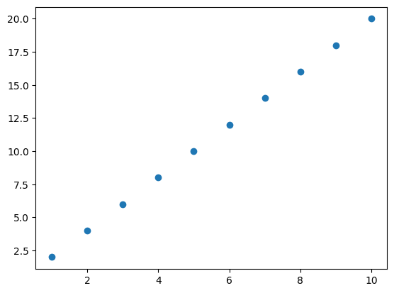
Output from this notebook.
codecell 8
x = np.array([1,2,3,4,5,6,7,8,9,10])
y = np.array([2,4,6,8,10,12,14,16,18,20])
plt.plot(x,y,'s')
plt.show()
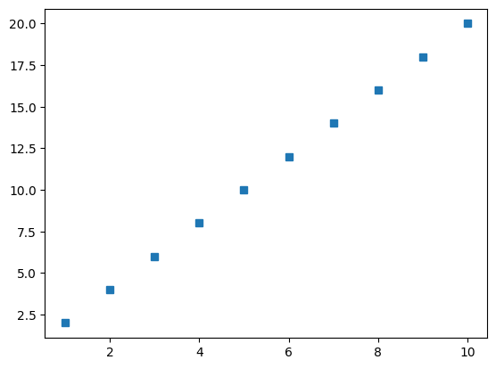
Output from this notebook.
codecell 9
x = np.array([1,2,3,4,5,6,7,8,9,10])
y = np.array([2,4,6,8,10,12,14,16,18,20])
plt.plot(x,y,'d')
plt.show()
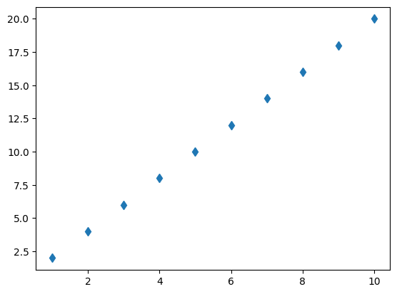
Output from this notebook.
codecell 10
x = np.array([1,2,3,4,5,6,7,8,9,10])
y = np.array([2,4,6,8,10,12,14,16,18,20])
plt.plot(x,y,'p')
plt.show()
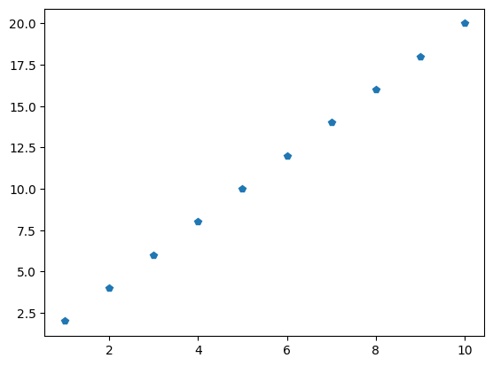
Output from this notebook.
codecell 11
x = np.array([1,2,3,4,5,6,7,8,9,10])
y = np.array([2,4,6,8,10,12,14,16,18,20])
plt.plot(x,y,'r')
plt.show()
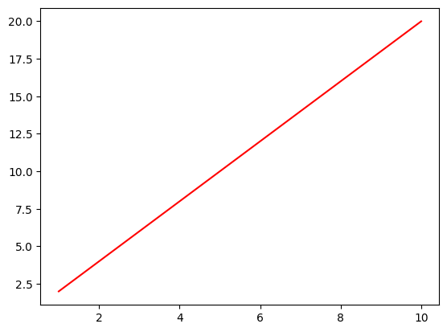
Output from this notebook.
codecell 12
x = np.array([1,2,3,4,5,6,7,8,9,10])
y = np.array([2,4,6,8,10,12,14,16,18,20])
plt.plot(x,y,'g')
plt.show()
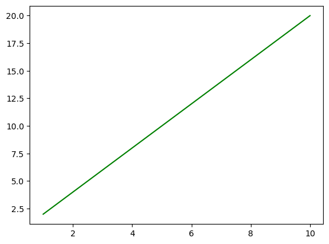
Output from this notebook.
codecell 13
x = np.array([1,2,3,4,5,6,7,8,9,10])
y = np.array([2,4,6,8,10,12,14,16,18,20])
plt.plot(x,y,marker ="*")
plt.show()
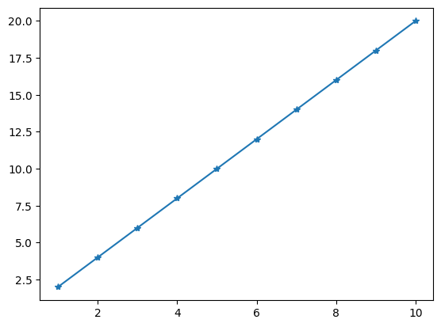
Output from this notebook.
codecell 14
x = np.array([1,2,3,4,5,6,7,8,9,10])
y = np.array([2,4,6,8,10,12,14,16,18,20])
plt.plot(x,y,'o-r')
plt.show()
Output from this notebook.
codecell 15
x = np.array([1,2,3,4,5,6,7,8,9,10])
y = np.array([2,4,6,8,10,12,14,16,18,20])
plt.plot(x,y,'o:g')
plt.show()
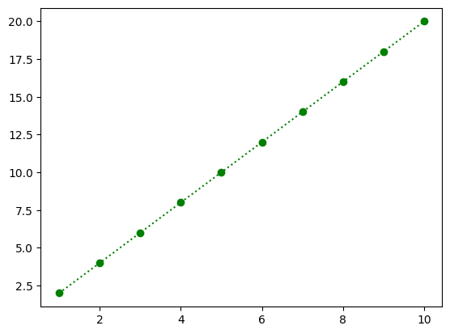
Output from this notebook.
codecell 16
x = np.array([1,2,3,4,5,6,7,8,9,10])
y = np.array([2,4,6,8,10,12,14,16,18,20])
plt.plot(x,y,'o--y')
plt.show()
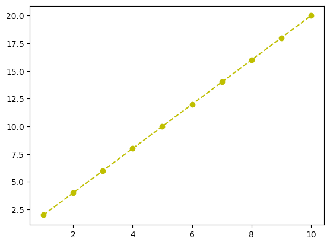
Output from this notebook.
codecell 17
x = np.array([1,2,3,4,5,6,7,8,9,10])
y = np.array([2,4,6,8,10,12,14,16,18,20])
plt.plot(x,y,'o-.m')
plt.show()
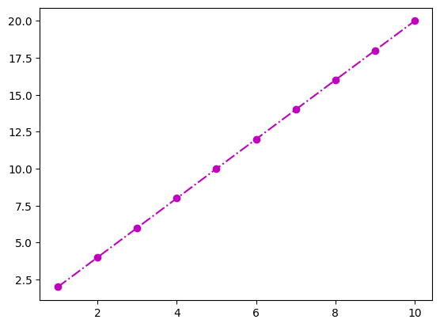
Output from this notebook.
3. Styling markers and lines with keywords
The marker aliases
Five separate visual channels are controlled in the next two cells. The short names are aliases matplotlib accepts for the long ones:
Alias
Full name
Controls
1st cell
2nd cell
c
color
the connecting line
yellow
magenta
marker
—
symbol shape
circle
circle
ms
markersize
symbol size, in points (diameter)
10
20
mec
markeredgecolor
symbol border
black
black
mfc
markerfacecolor
symbol fill
magenta
yellow
The second cell is the first one with the line and fill colors swapped and the marker doubled in size. It exists to prove c and mfc are genuinely independent — a common beginner confusion is expecting one color argument to control everything.
⚠️ ms here is a diameter in points. In plt.scatter further down, the size argument s is an area in points². Different scales — ms=20 and s=20 produce very different dots.
Line style by name and by symbol
linestyle='dotted' and linestyle=':' draw the identical chart. That is the whole point of running them next to each other:
Name
Symbol
'solid'
'-'
'dashed'
'--'
'dotted'
':'
'dashdot'
'-.'
These cells pass no marker, so the markers are gone again and only the styled line remains.
codecell 19
x = np.array([1,2,3,4,5,6,7,8,9,10])
y = np.array([2,4,6,8,10,12,14,16,18,20])
plt.plot(x,y,c='y',marker='o',ms=10,mec='k',mfc='m')
plt.show()
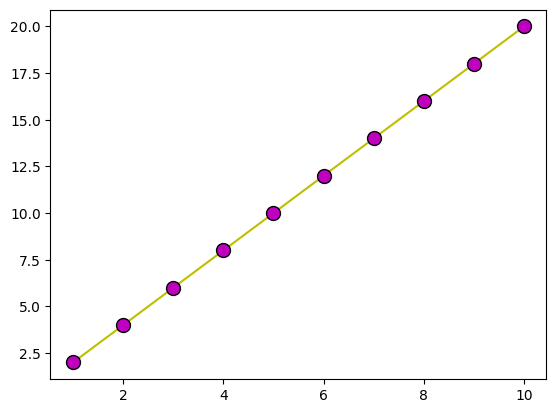
Output from this notebook.
codecell 20
x = np.array([1,2,3,4,5,6,7,8,9,10])
y = np.array([2,4,6,8,10,12,14,16,18,20])
plt.plot(x,y,c='m', marker = 'o', ms = 20, mec = 'k', mfc = 'y')
plt.show()
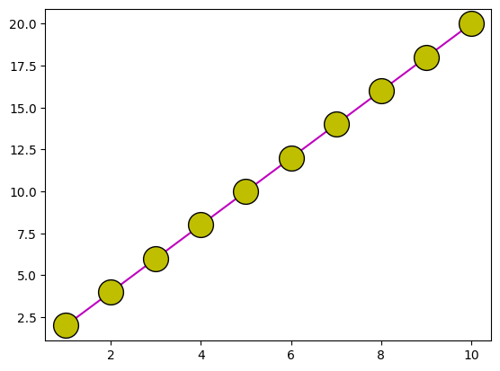
Output from this notebook.
codecell 21
x = np.array([1,2,3,4,5,6,7,8,9,10])
y = np.array([2,4,6,8,10,12,14,16,18,20])
plt.plot(x,y,linestyle = 'dotted',c='m')
plt.show()
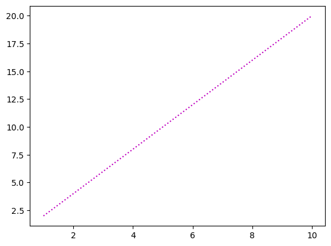
Output from this notebook.
codecell 22
x = np.array([1,2,3,4,5,6,7,8,9,10])
y = np.array([2,4,6,8,10,12,14,16,18,20])
plt.plot(x,y,linestyle = 'dashed',c='m')
plt.show()
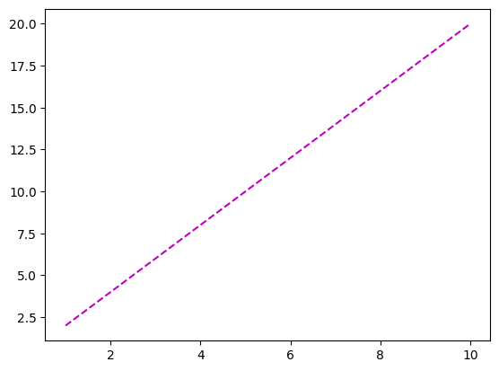
Output from this notebook.
codecell 23
x = np.array([1,2,3,4,5,6,7,8,9,10])
y = np.array([2,4,6,8,10,12,14,16,18,20])
plt.plot(x,y,linestyle = ':',c='m')
plt.show()
Output from this notebook.
4. Titles, axis labels, and grid
The first charts here that actually communicate something.
Line
Explanation
plt.title("Plot", loc="left")
Title above the Axes. loc accepts 'left', 'center' (the default), 'right'.
plt.xlabel("X Axis")
Label under the horizontal axis.
plt.ylabel("Y axis")
Label beside the vertical axis, rotated 90°.
c='#00ffbd'
A hex RGB color (bright turquoise) — you are not restricted to the 8 single-letter colors.
plt.grid(color='r', linestyle=':', linewidth=0.6)
Turns the grid on and styles it: red, dotted, thin. A grid helps a reader estimate values off the chart.
Notice the ordering. The title and label calls come beforeplt.plot, yet they still apply — because they all target the same current Axes, which pyplot creates on the first call that needs one. It reads oddly, though; draw first, then decorate is the convention that matches how people read code.
⚠️ linewidth='10' passes a string. Matplotlib converts it to 10.0, so the chart is correct, but it works by accident. Write linewidth=10.
Two more grid facts worth knowing: plt.grid(axis='y') draws horizontal lines only, and calling plt.grid() a second time toggles it off — so pass True / False explicitly when it matters.
codecell 25
x = np.array([1,2,3,4,5,6,7,8,9,10])
y = np.array([2,4,6,8,10,12,14,16,18,20])
plt.title("Plot",loc="left")
plt.xlabel("X Axis")
plt.ylabel("Y axis")
plt.plot(x,y,linestyle = 'dotted', linewidth='10',c='#00ffbd')
plt.show()
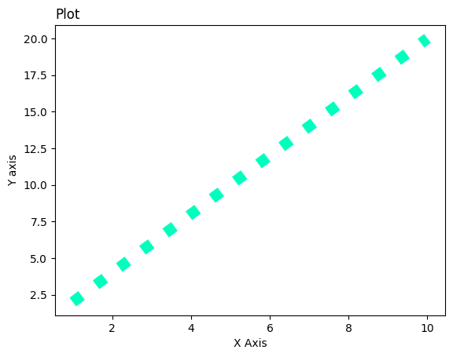
Output from this notebook.
codecell 26
x = np.array([1,2,3,4,5,6,7,8,9,10])
y = np.array([2,4,6,8,10,12,14,16,18,20])
plt.title("Plot", loc = 'center')
plt.xlabel("X axis")
plt.ylabel("Y axis")
plt.plot(x,y,linestyle = 'dotted',linewidth = '10',c='k')
plt.show()
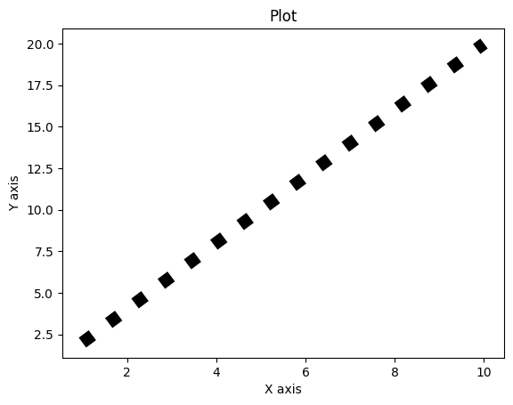
Output from this notebook.
codecell 27
x = np.array([1,2,3,4,5,6,7,8,9,10])
y = np.array([2,4,6,8,10,12,14,16,18,20])
plt.title("Plot", loc = 'center')
plt.xlabel("X axis")
plt.ylabel("Y axis")
plt.plot(x,y)
plt.grid(color = 'r', linestyle = ':', linewidth = 0.6)
plt.show()
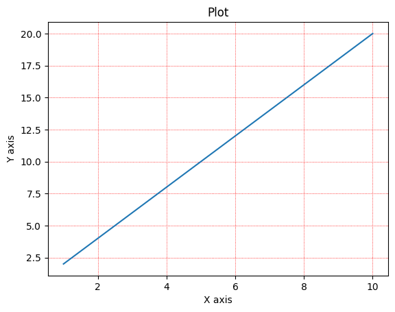
Output from this notebook.
5. Subplots — several charts on one figure
plt.subplot(nrows, ncols, index)
nrows, ncols describe the grid you divide the figure into
index selects which panel you are about to draw in
indexing starts at 1, not 0, running left-to-right then top-to-bottom
Every call after plt.subplot(...) targets that panel until the next plt.subplot(...) switches the current Axes.
Cell uses
Grid
Layout
(1, 2, 1) and (1, 2, 2)
1 row × 2 cols
side by side
(2, 1, 1) and (2, 1, 2)
2 rows × 1 col
stacked — only the grid changed
(2, 2, 1) and (2, 2, 2)
2 rows × 2 cols
four panels, only the top two drawn, so the bottom row is empty whitespace
Side-by-side is better for comparing shapes; stacked with a shared x-axis is better for comparing values at the same x. The half-empty 2×2 is useful to see once so the numbering clicks — but in real work, size the grid to the number of charts you actually have.
Panel title vs figure title
The last cell of this group is the important one:
Call
Scope
Result
plt.title(...)
current Axes
one heading per panel
plt.suptitle(...)
the Figure
one heading above everything
Because plt.title follows the current-Axes rule, position matters: "First" lands on panel 1 only because it is called before the second plt.subplot switches context. Move that line down and the title moves with it. This is the mental model from the top of the notebook, in code.
codecell 29
a = np.array([1, 2, 3])
b = np.array([2, 4, 6])
plt.subplot(1, 2, 1)
plt.plot(a,b)
c = np.array([1, 2, 3])
d = np.array([5, 10, 15])
plt.subplot(1, 2, 2)
plt.plot(c,d)
plt.show()
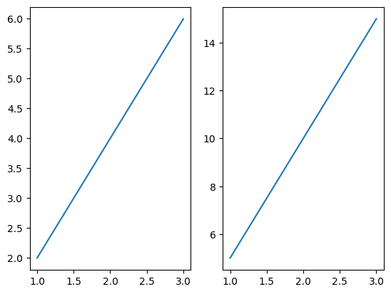
Output from this notebook.
codecell 30
a = np.array([1, 2, 3])
b = np.array([2, 4, 6])
plt.subplot(2, 1, 1)
plt.plot(a,b)
c = np.array([1, 2, 3])
d = np.array([5, 10, 15])
plt.subplot(2, 1, 2)
plt.plot(c,d)
plt.show()
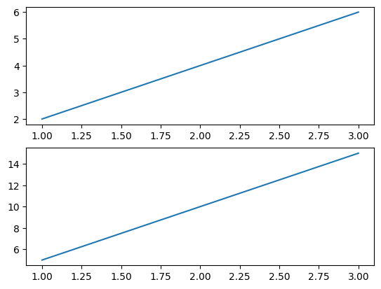
Output from this notebook.
codecell 31
a = np.array([1, 2, 3])
b = np.array([2, 4, 6])
plt.subplot(2, 2, 1)
plt.plot(a,b)
c = np.array([1, 2, 3])
d = np.array([5, 10, 15])
plt.subplot(2, 2, 2)
plt.plot(c,d)
plt.show()
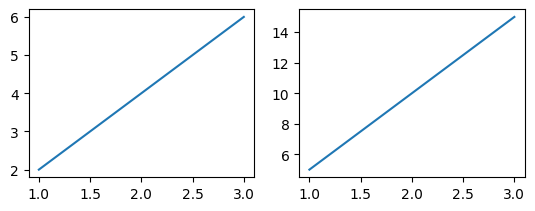
Output from this notebook.
codecell 32
a = np.array([1, 2, 3])
b = np.array([2, 4, 6])
plt.subplot(2, 2, 1)
plt.plot(a,b)
plt.title("First")
c = np.array([1, 2, 3])
d = np.array([5, 10, 15])
plt.subplot(2, 2, 2)
plt.plot(c,d)
plt.title("Second")
plt.suptitle("Title")
plt.show()
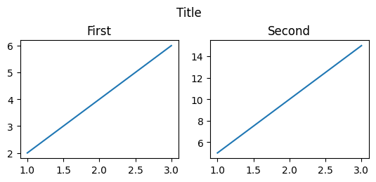
Output from this notebook.
6. Scatter plots
A scatter plot draws points without connecting them. Use it when x and y are paired observations and row order means nothing — a line plot implies a sequence, a scatter does not.
The data changes here (y = [5,7,2,1,3,4,7,6,8,3] is unordered), so there is no longer a straight line to hide behind.
Series-level color
Code
Effect
plt.scatter(x, y)
10 dots, default blue
two scatter calls in one cell
Matplotlib does not clear between calls — it layers. The second series automatically takes the next color in the cycle (orange).
color='m'
a single value ⇒ applies to the whole series
color=colors (array of names)
an array ⇒ applies element-wise, dot i gets colors[i]. Length must match the number of points.
⚠️ Two traps in this group. The two-series cells have no legend, so a reader cannot tell the groups apart — the fix is label="..." on each call plus plt.legend(). And the per-point color array contains "white", so that dot is drawn on a white background and is invisible: only 9 dots appear. The chart did not error, it silently lost data.
Color as data — colormap + colorbar
This is a genuinely different idea, and it is why c and color are separate arguments:
Line
Explanation
colorss = np.array([5, 15, 23, …])
A third variable measured at each point — not a color name, a number.
c=colorss
Feed numbers to c and matplotlib maps them onto a color scale: low values one end, high values the other.
cmap='winter'
Which scale to use. 'winter' runs blue → green.
plt.colorbar()
Draws the strip that says which color means which number. Without it the colors are meaningless, so this call is not decoration.
You now have a 3-dimensional chart: x, y, and color.
Size as data, and everything at once
Argument
Encodes
x, y
position
c= + cmap=
a third variable, as color
s=
a fourth variable, as bubble area in points²
alpha=0.4
40% opacity, so overlapping bubbles stay readable
In the final cell of this group sizee is redefined with much larger values (2000, 4000, 3000), so the big bubbles overlap — which is exactly the situation alpha exists for.
Note
💡 'jet' is a well-known bad default: it is not perceptually uniform (it creates false bands at the yellow/cyan transitions) and it fails for color-blind readers. 'viridis' is the modern replacement, and matplotlib's default for a reason. Worth swapping in when you revisit this.
codecell 34
x = np.array([1,2,3,4,5,6,7,8,9,10])
y = np.array([5,7,2,1,3,4,7,6,8,3])
plt.title("Scatter", loc = 'center')
plt.xlabel("X axis")
plt.ylabel("Y axis")
plt.scatter(x,y)
plt.show()
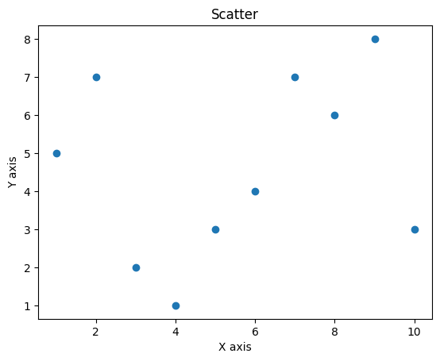
Output from this notebook.
codecell 35
x = np.array([1,2,3,4,5,6,7,8,9,10])
y = np.array([5,7,2,1,3,4,7,6,8,3])
a = np.array([1,2,3,4,5,6,7,8,9,10])
b = np.array([7,6,3,4,2,5,1,7,5,2])
plt.scatter(x,y)
plt.scatter(a,b)
plt.show()
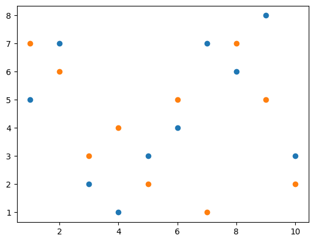
Output from this notebook.
codecell 36
x = np.array([1,2,3,4,5,6,7,8,9,10])
y = np.array([5,7,2,1,3,4,7,6,8,3])
a = np.array([1,2,3,4,5,6,7,8,9,10])
b = np.array([7,6,3,4,2,5,1,7,5,2])
plt.scatter(x,y,color = 'm')
plt.scatter(a,b,color = 'y')
plt.show()
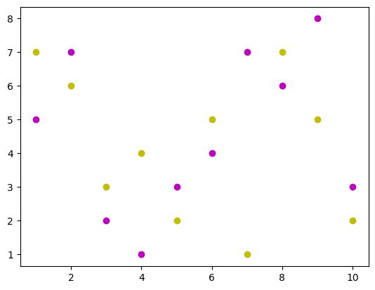
Output from this notebook.
codecell 37
x = np.array([1,2,3,4,5,6,7,8,9,10])
y = np.array([5,7,2,1,3,4,7,6,8,3])
colors = np.array(["yellow","green","blue","red","pink","black","orange","white","gold","violet"])
plt.scatter(x,y,color = colors)
plt.show()
Bars compare a measured value across categories. The x input becomes strings here, which is the signal that these are categories, not numbers.
Code
Result
plt.bar(x, y)
Vertical bars. Categories on the x-axis, value = bar height.
plt.barh(x, y)
horizontal bars. Categories move to the y-axis, value = bar length. Prefer this when category names are long.
plt.bar(..., width=0.3)
width is the fraction of its slot each bar fills. Default 0.8, so 0.3 gives thin bars with wide gaps.
plt.barh(..., height=0.3)
The same thinning for horizontal bars — but the argument is called height, because for barh the thickness runs vertically.
That last pair is the one to remember: bar → width, barh → height. Passing width to barh sets the bar length instead and silently gives you a wrong chart.
codecell 42
x = np.array(["X", "Y", "Z"])
y = np.array([5, 10, 15])
plt.bar(x,y)
plt.show()
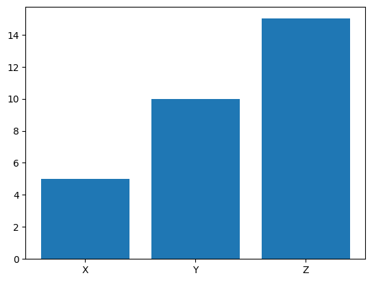
Output from this notebook.
codecell 43
x = np.array(["X", "Y", "Z"])
y = np.array([5, 10, 15])
plt.barh(x,y)
plt.show()
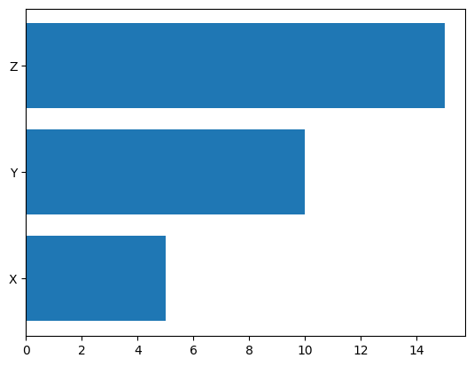
Output from this notebook.
codecell 44
x = np.array(["X", "Y", "Z"])
y = np.array([5, 10, 15])
plt.bar(x,y,color = "gold",width = 0.3)
plt.show()
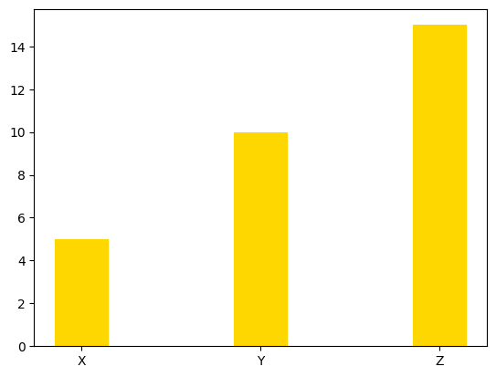
Output from this notebook.
codecell 45
x = np.array(["X", "Y", "Z"])
y = np.array([5, 10, 15])
plt.barh(x,y,color = "gold",height = 0.3)
plt.show()
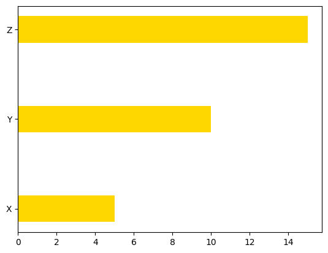
Output from this notebook.
8. Histogram
Part
Meaning
np.random.normal(100, 25, 100)
Draw 100 random samples from a normal (bell-curve) distribution with mean 100 and standard deviation 25. Arguments are (loc, scale, size).
print(x)
Shows the raw numbers — worth doing once, so you see that a histogram is computed from a plain list of values.
plt.hist(x)
Sorts those values into 10 bins by default, then draws one bar per bin whose height is the count of values in it.
A histogram is not a bar chart. A bar chart takes one value per category; a histogram takes many raw values and computes the categories (bins) itself. It answers "how is this variable distributed?" — here, a rough bell shape centred near 100, with most values between 50 and 150 (mean ± 2 std).
⚠️ There is no np.random.seed(...), so this cell produces different numbers and a slightly different chart on every run. Fine for teaching; set a seed for anything you want to reproduce or commit.
codecell 47
x = np.random.normal(100,25,100)
print(x)
plt.hist(x)
plt.show()
plt.pienormalises for you: each wedge is value / sum. The sum here is 110, so the wedges come out as 9.1%, 18.2%, 27.3% and 45.5%. Wedges start at the 3 o'clock position and run counter-clockwise.
Argument
What it does
(none)
Anonymous colored slices — true, but useless.
labels=labelss
Attaches a name to each wedge, outside it, matched by index. Now the chart means something.
startangle=10
Rotates where the first wedge begins, in degrees counter-clockwise from 3 o'clock. startangle=90 starts at the top, which is the usual choice because readers expect it.
explode=[…]
One number per wedge: how far to push it out, as a fraction of the radius. Length must match the data.
The explode lesson
explode=[0.1, 0.12, 0.13, 0.14] pulls all four wedges out by similar amounts — the gaps grow but nothing is emphasised, because emphasis is relative. explode=[0.5, 0, 0, 0] pulls out only MATHS (half a radius) and leaves the rest alone. That contrast is the point: explode is for highlighting one slice, not for decorating all of them.
colorr is created and never passed, so that cell renders exactly the same chart as the one above it, with the default palette. Python does not warn about an unused variable and matplotlib has nothing to complain about — the chart is valid, just not the one intended. The fix is one keyword:
Annotations put explanatory text on the chart, at a data coordinate. Note the data is now plain Python lists, not NumPy arrays — matplotlib accepts both.
Argument
Role
xy=(4, 25)
The point being annotated, in data coordinates. With no xytext, the text is placed right there — which is why the first version slightly overlaps the line.
xytext=(3, 30)
Where the text sits, also in data coordinates.
arrowprops={"arrowstyle": "->"}
Draws the connecting arrow. Omit this dict and you get floating text with no arrow, even though xytext is set.
The second version solves the first version's overlap: label in clear space, arrow pointing at the subject. arrowprops accepts other styles such as "-|>" and "fancy".
Labelling every point in a loop
Line
Explanation
for i in range(len(x))
Loop over positions 0, 1, 2.
y[i]
The text argument — the y-value itself becomes the label. It is an int, and matplotlib calls str() on it internally, so 10 renders as "10". It works, but str(y[i]) states the intent.
(x[i], y[i])
Passed positionally, so it lands in xy. Same as writing xy=(x[i], y[i]).
Plot once, then loop to annotate — that is how you put value labels on a chart, and it works the same way for bars. (The indentation in that cell is a single space. Python accepts it; 4 spaces would match the rest of the file.)
codecell 56
x = [1, 2, 3, 4]
y = [10, 20, 15, 25]
plt.plot(x, y)
plt.annotate(
"Highest",
xy=(4, 25)
)
plt.show()
x = [1, 2, 3]
y = [10, 20, 15]
plt.plot(x, y)
for i in range(len(x)):
plt.annotate(
y[i],
(x[i], y[i])
)
plt.show()
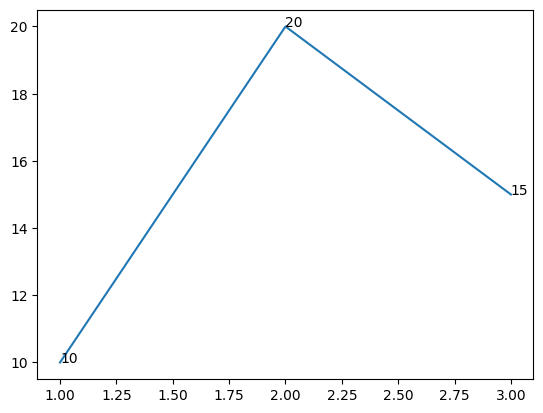
Output from this notebook.
11. Filled areas
fill_between(x, y1) shades the region between the y curve and y2 = 0, which is the default — so it fills from the line down to the x-axis.
The full form is fill_between(x, y1, y2), which shades the band between two curves. That is how confidence intervals and min/max ranges are drawn, and it is the more useful version.
In the two-fill cell, each fill is still measured from zero and they are layered in call order. Because y2 is smaller everywhere, the second (orange) fill is drawn on top of part of the first, hiding it.
⚠️ Two traps in one cell: no alpha, so the overlap is opaque rather than blended; and no label + plt.legend(), so nothing identifies the series. Compare with plt.fill_between(x, y2, y1) — a single call that shades only the gap between the two curves, which is usually what you actually want.
codecell 60
x = [1, 2, 3, 4]
y = [10, 20, 15, 25]
plt.fill_between(x, y)
plt.show()
Data passed inline as lists — no variables needed.
plt.savefig("chart.png")
Writes the current figure to disk. The format comes from the file extension (.png, .svg, .pdf). The path is relative, so the file lands next to this notebook — chart.png in this folder is the real output of this cell.
plt.show()
Displays it afterwards.
The order here is correct and it matters.plt.show() renders and clears the figure, so calling savefig after show commonly writes a blank image. Rule: save first, show second.
For real work: dpi=300 for print resolution, and bbox_inches="tight" to stop long labels being cut off at the edges.
o circle, s square, d thin diamond, p pentagon, * star
- solid, -- dashed, : dotted, -. dash-dot
b g r c m y k w
Argument aliases used above
Short
Long
Applies to
c
color
line / marker color
ms
markersize
marker diameter, in points
mec
markeredgecolor
marker border
mfc
markerfacecolor
marker fill
Which chart for which question
Chart
Question it answers
plot
How does a value change across an ordered sequence?
scatter
Are two variables related?
bar / barh
How do categories compare?
hist
How is one variable distributed?
pie
What share does each part hold of a whole?
fill_between
What is the range, or the cumulative area?
Issues in this notebook
Ordered by how much they matter. None of these break execution — which is precisely why they are worth knowing.
#
Where
Issue
Fix
1
last pie cell
colorr is defined but never passed to plt.pie, so the intended colors never appear — silently
add colors=colorr
2
per-point scatter colors
"white" makes one dot invisible on a white background
use a visible color, or edgecolors='k'
3
two-scatter cell, two-fill cell
two data series drawn with no legend
label="..." on each call + plt.legend()
4
histogram
np.random.normal with no seed — the chart changes every run
np.random.seed(42) first
5
title / label cells
linewidth='10' passes a string; it works only because matplotlib coerces it
linewidth=10
6
bubble scatter
cmap='jet' is not perceptually uniform and is poor for color-blind readers
cmap='viridis'
7
annotation loop
one-space indentation, and an int where a string is expected
4-space indent, str(y[i])
8
first title cell
title and labels called before plt.plot — valid, but reads backwards
draw first, then decorate
One structural note: the saved execution counts run 2, 3, 5, 7 … 77 with gaps, so these cells were run and re-run out of order rather than top-to-bottom in one clean pass. The saved images are real output, but a fresh Restart & Run All is what proves the notebook still reproduces today.
Summary
What this notebook is. A hands-on tour of the matplotlib.pyplot API, covering six chart families and the styling arguments that apply across them. It is a reference-by-example, not a data analysis — the data is deliberately trivial so that every visual change is traceable to one argument.
The five ideas that carry the whole file:
There is a hidden current figure.plt.plot, plt.title and plt.subplot all act on whatever Axes is current. This is why order matters, and why plt.title attaches to one panel while plt.suptitle attaches to the whole figure.
Style has two dialects. The terse format string 'o--r' and the explicit keywords marker='o', linestyle='--', color='r' do the same job. This notebook teaches both by running them side by side. Keywords are what you should write.
Data can drive more than position.c= with a numeric array plus a cmap encodes a third variable as color; s= with an array encodes a fourth as bubble area. Whenever color carries data, plt.colorbar() stops being optional.
Pick the chart from the question, not from the look. Line for sequence, scatter for relationship, bar for category comparison, histogram for distribution, pie for share of a whole. The bar vs hist distinction is the one people get wrong: bar takes one value per category, hist computes the categories from raw values.
The finishing calls are the ones that get skipped. Labels, legend, colorbar, and savefigbeforeshow. Three cells here are missing one of these, and every one of them still runs without error.
Where this notebook stops. No legends, no autopct on the pies, no object-oriented fig, ax = plt.subplots() style, and no chart drawn from a real Pandas DataFrame. Those are the natural next steps — especially the OO style, since that is what survives contact with real code, where you build several figures at once and cannot rely on a global "current" pointer.
If you remember only one thing:matplotlib always draws into a current Figure and Axes — the chart is the data plus every styling call that lands on that Axes before you show or save it. Get that model right and the hundreds of keyword arguments stop being something to memorise and start being something to look up.
fig, ax = plt.subplots(figsize=(8, 5))
ax.bar(revenue_by_pizza.index, revenue_by_pizza.values,
color=['steelblue', 'tomato', 'green'])
# Add value on top of each bar
for i, value in enumerate(revenue_by_pizza.values):
ax.text(i, value+10, f'${value}', ha='center', fontsize=11)
ax.set_title('Total Revenue by Pizza Type')
ax.set_xlabel('Pizza Type')
ax.set_ylabel('Revenue ($)')
plt.show()
Output from this notebook.
codecell 8
fig, ax = plt.subplots(figsize=(8, 5))
for i, value in enumerate(revenue_by_pizza.values):
print(i)
print(value)
ax.text(i, value + 10, f'${value}', ha='center', fontsize=11)
Output
0
1116
1
492
2
645
Output from this notebook.
codecell 9
fig, ax = plt.subplots(figsize=(8, 5))
ax.bar(revenue_by_pizza.index, revenue_by_pizza.values,
color=['steelblue', 'tomato', 'green'])
# Add value on top of each bar
for i, value in enumerate(revenue_by_pizza.values):
ax.text(i, value+10, f'${value}', ha='center', fontsize=11)
# Add grid
ax.grid(axis='y', linestyle='--', alpha=0.3,visible=True,which='major')
ax.set_title('Total Revenue by Pizza Type')
ax.set_xlabel('Pizza Type')
ax.set_ylabel('Revenue ($)')
plt.show()
Output from this notebook.
codecell 10
fig, ax = plt.subplots(figsize=(8, 5))
# Draw bars
ax.bar(revenue_by_pizza.index, revenue_by_pizza.values,
color=['steelblue', 'tomato', 'green'],
edgecolor='white',
width=0.5)
# Value on top of each bar
for i, value in enumerate(revenue_by_pizza.values):
ax.text(i, value + 10, f'${value}', ha='center', fontsize=11)
# Grid
ax.grid(axis='y', linestyle='--', alpha=0.7)
# Labels
ax.set_title('Total Revenue by Pizza Type', fontsize=14, fontweight='bold')
ax.set_xlabel('Pizza Type', fontsize=12)
ax.set_ylabel('Revenue ($)', fontsize=12)
# Save it
fig.savefig('pizza_revenue.png', dpi=150, bbox_inches='tight')
plt.show()
What is the most common quantity ordered at our pizza shop?
codecell 10
#Plain Python way first
# Count how many orders fall in each range
quantities = df['quantity'].values
small = 0 # 0-10
medium = 0 # 10-15
large = 0 # 15+
for q in quantities:
if q <= 10:
small += 1
elif q <= 15:
medium += 1
else:
large += 1
print("Small (0-10):", small)
print("Medium (10-15):", medium)
print("Large (15+):", large)


{kind=link}